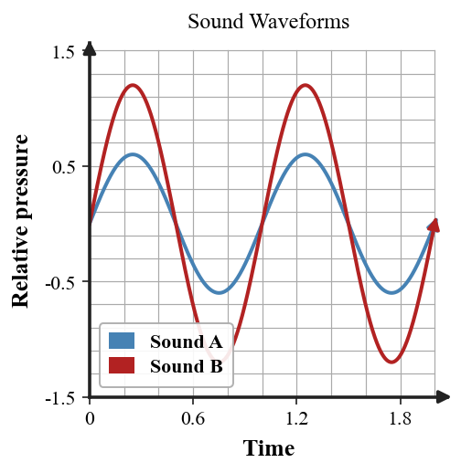

Six-question DOK check for Section 5.3: 2 DOK 1, 2 DOK 2, 1 DOK 3, and 1 DOK 4.
Concept check during the sound-model review: Give the term that fits the spread-out region in a longitudinal sound wave. Answer as if you were checking another student’s model.
Concept check during the sound-model review: Decide which wave property is most directly related to loudness. Answer as if you were checking another student’s model.
Independent practice — sound-model review: A higher-pitched sound is modeled with compressions closer together while wave speed stays about the same. Explain whether that spacing is consistent with higher frequency. Interpret the result in the situation, not just as a number.
Independent practice — sound-model review: A speaker’s volume is increased without changing the note. Predict which graph feature should increase and which timing feature can stay the same. Interpret the result in the situation, not just as a number.

Model critique — sound-model review: Evaluate the difference between a sound traveling through a solid with a sound traveling through a gas. Explain how both can transmit sound even though the particles are arranged differently. Finish with a corrected physics statement.
Transfer challenge — sound-model review: Build a complete sound model from source to receiver. Include the vibrating source, medium, compressions/rarefactions, local particle motion, wavelength, frequency, and energy transfer. Then identify one feature of the model that would fail in a vacuum. Defend the model or design and identify what evidence would strengthen it.